11 抓持保持

6格／0.9秒。穩定抓持，可循環等待後續輸入。
本版只更新08為12格720ms握持前戳、槍尖不繞背；其他15招保留r2。待審候選，未整合遊戲。
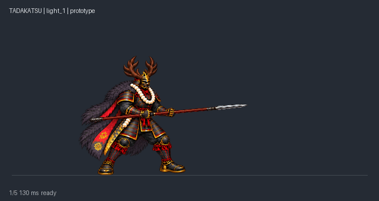
5格／0.61秒。雙手短收，前踏推出長槍並收回。
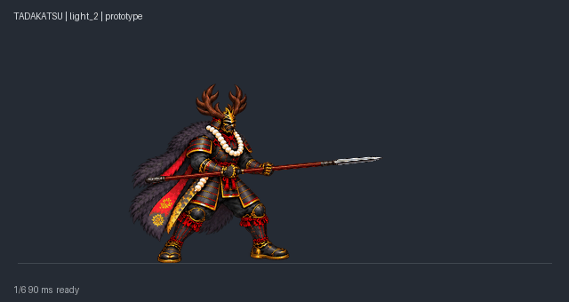
6格／0.62秒。再前踏刺擊，回共同待機，保持連段前移。
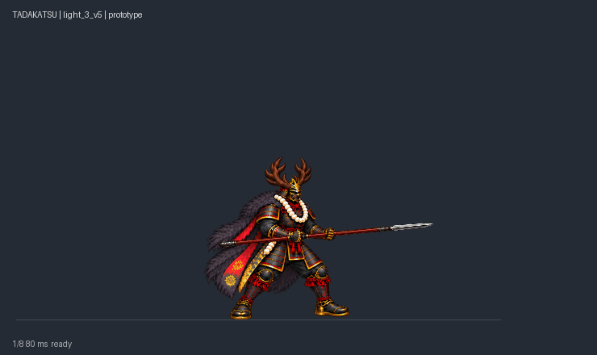
8格／0.78秒。右手單手握近槍尾，左手放開平衡；肩腰由畫面左下帶起向右上斜挑，起收銜接共用待機。
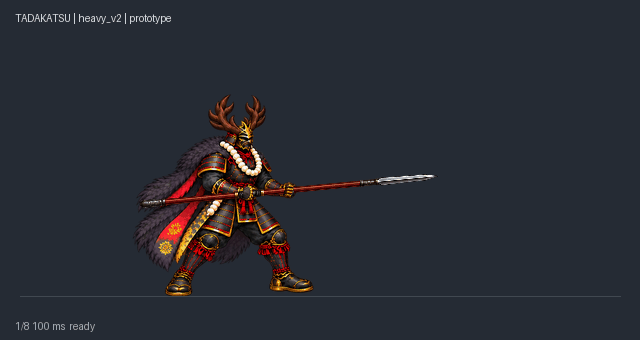
8格／1.04秒。較長準備，穿透接觸與抽槍分開；抽回事件才倒地。
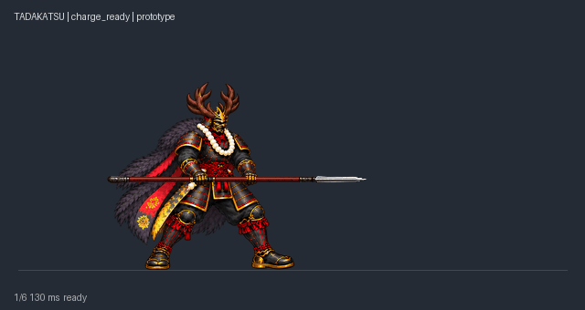
6格／0.87秒。雙手逐步把整槍高舉至鹿角上方。
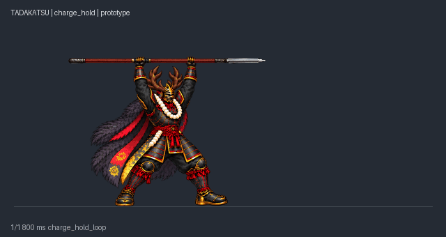
1格／0.8秒。單格穩定停留，等待玩家放開；不是多格呼吸動畫。
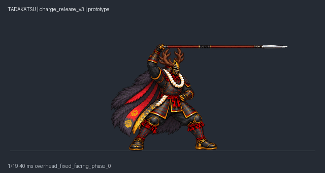
19格／1.37秒。固定腳步與朝向，單手握槍尾頭頂兩圈；肩軀幹微擺發力，按最新使用者指示覆蓋整人旋轉規格。
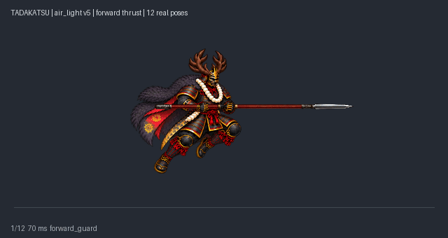
12格／0.72秒。空中握持長槍、向前戳、收回下降；全程槍尖朝前，不再繞背或橫掃大轉身。
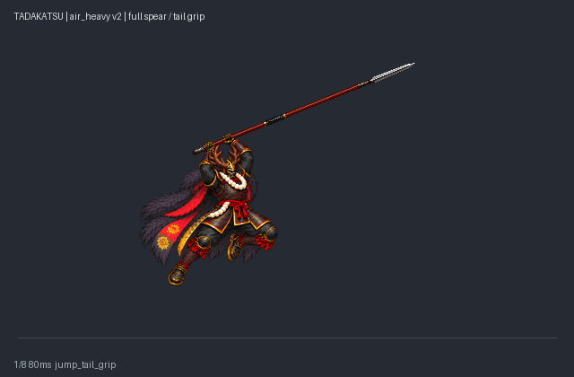
8格／0.72秒。空中前揮與下劈時握近槍尾，全槍伸出；落地前回收，避免槍尖穿地。
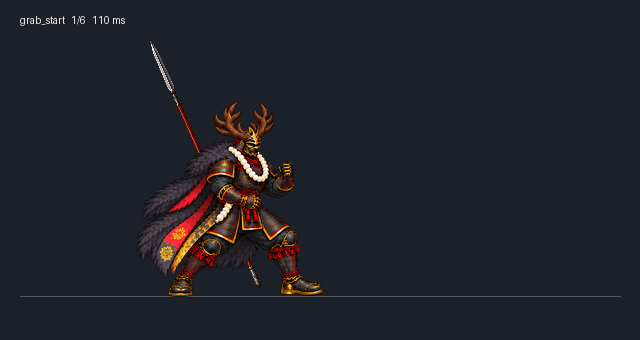
6格／0.64秒。空手抓衣領或上臂拉近，長槍安全留後層。
6格／0.9秒。穩定抓持，可循環等待後續輸入。

9格／0.78秒。單腳支撐抬膝接觸，再回抓持。
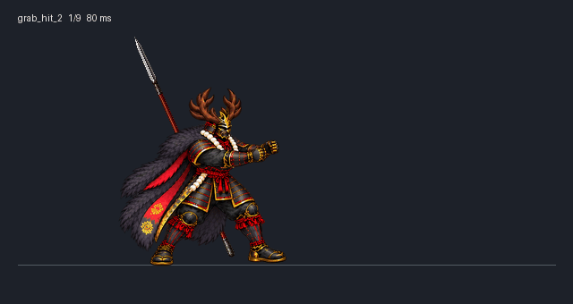
9格／0.6秒。與第一膝擊共用同套9張人物姿勢，以600ms獨立播放；knee_contact_2在250ms，不自動雙連。

9格／0.88秒。雙臂與腰髖向前拋出，張手時釋放對手。

9格／0.92秒。真側背身轉向與過肩反拋，非前投倒播。
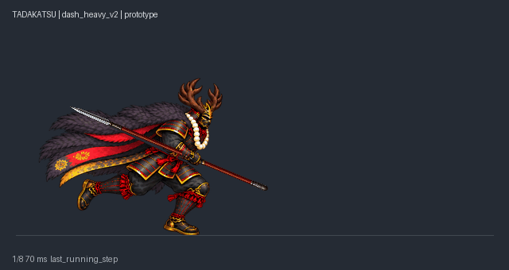
8格／0.67秒。新增3張跑重橫掃姿勢，雙臂與長槍更前伸，8格670ms。